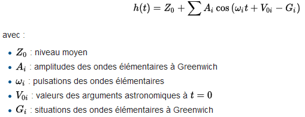
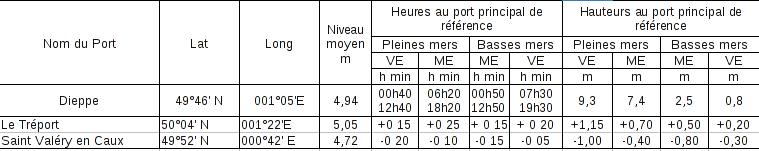

Les marées sont présentes partout, en Manche, en Méditérannée, et même dans mon café! Petites explications sur le phénomène et brêve prise en main du calcul de marée.
Description du phénomène
Marées
Coefficient
Origine du phénomène
Lune - Cycle des heures
Soleil - Cycle des coefficients
Sizygie : Dans l’axe
Quadrature : Triangle rectangle
Terre : Rotation (Coryolis)
Géographie locale - Tous les endroits ne sont pas synchronisés
Sources de données
SHOM - seule source officielle
Service Hydrographique et Océanographique de la Marine
Le SHOM utilise la formule harmonique depuis 1991 en remplacement de la formule de Laplace:

L’information du SHOM est reprise à plusieurs endroits, mais attention aux apps de téléphones!
Présentation des données

Calcul de marée
Port de référence
Courbe sinusoidale
Droite des douzièmes
Demi-cercle anglais
 Teebo
Teebo
 5/Dec 2016
5/Dec 2016